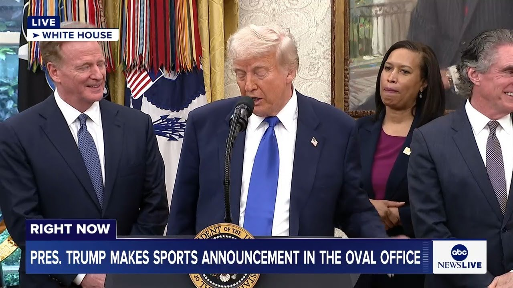

来B站一起耍【Global每日英语简报】
【直播：特朗普总统在椭圆形办公室发布体育相关声明】
Summary: President Trump announced in the Oval Office that Washington, D.C., will host the 2027 NFL Draft on the National Mall, expecting over a million attendees. He highlighted the economic benefits, including tourism and job creation, and praised the new 65,000-seat stadium planned for the Washington Commanders at the RFK Stadium site. Trump emphasized the importance of sports in uniting the country and improving D.C.'s safety and appearance. Mayor Muriel Bowser and NFL Commissioner Roger Goodell expressed gratitude for Trump's support. The event also touched on unrelated topics, including Trump's criticism of immigration policies, a joke about an AI-generated image of him as the Pope, and plans to address Gaza's humanitarian crisis. Trump dismissed questions about annexing Canada and discussed tariffs on the film industry, while also mentioning the World Cup and the 250th anniversary of the U.S. The press conference ended with applause.
摘要： 特朗普总统在椭圆形办公室宣布，华盛顿特区将于2027年在国家广场举办NFL选秀大会，预计吸引逾百万参与者。他强调该活动将带来旅游业增长和就业机会等经济效益，并对计划在RFK体育场旧址为华盛顿指挥官队新建的6.5万座体育场表示赞赏。特朗普指出体育赛事对凝聚国家、提升特区安全与市容的重要性。市长穆丽尔·鲍泽和NFL总裁罗杰·古德尔对其支持表示感谢。发布会还涉及移民政策批评、特朗普AI教皇像的玩笑话、加沙人道主义危机应对计划等无关话题。特朗普驳回了有关吞并加拿大的提问，探讨了电影行业关税问题，同时提及世界杯和美国建国250周年纪念。记者会在掌声中结束。

⏱️ Estimated Reading Time: 17 min
DC on the National Mall and you get a little glimpse of it.
在国家广场的DC，你可以稍微瞥见它。
I don't think I was just saying to Roger, I don't think there's ever been anything like that.
我不认为我刚对罗杰说过，我觉得从未有过这样的东西。
That's a good idea.
这是个好主意。
In fact, maybe we could use it for other things also.
事实上，或许我们也能把它用于其他事情。
I have an idea.
我有个想法。
It's uh it's going to be beautiful.
这将，呃，将会非常美丽。
It's going to be something that uh nobody else will ever be able to duplicate that.
这将是一件，呃，其他人永远无法复制的事情。
I don't suspect.
我不怀疑。
It's very exciting.
这非常令人兴奋。
Every year, hundreds of young football players have their dreams come true as the NFL teams across the land.
每年，数百名年轻橄榄球运动员实现梦想，加入遍布全国的NFL球队。
And you just saw that last week select the best young players in America to join their ranks.
你们上周刚见证全美最优秀的年轻球员被选入他们的行列。
Hundreds of thousands of football fans will travel all across our country to cheer them on in person.
数十万橄榄球迷将走遍全国，亲自为他们加油。
We expect, would you say, more than 100,000 people, I think.
我们预计，应该说，超过10万人。
How what is the capacity would you think it can hold?
你觉得容量能达到多少？
Because the mall can actually hold up to a million people if you go all the way back.
因为如果完全开放，国家广场实际上能容纳百万人。
What do you think?
你觉得呢？
Three days we'll be over a million.
三天内人数将突破百万。
Oh yeah, you're going to be hosting local businesses and bringing jobs and tourism to the heart of our capital.
没错，你们将带动本地商业，为首都核心区带来就业和旅游业。
The draft is a celebration of one of our country's most cherished cultural institutions and the annual highlights for football fans everywhere.
选秀大会是对我国最受珍视的文化盛事的庆典，也是各地球迷每年的高光时刻。
Everyone in the world is going to be watching.
全世界都会瞩目。
Uh we look forward to welcoming people from across the nation from all over the world.
呃，我们期待迎接来自全国乃至全球的人们。
Last month the Washington commanders and the DC government also announced a major deal to build a brand new 65,000 seat football arena at the site of the RFK Stadium in Eastern Capitol Hill.
上月华盛顿指挥官队与DC政府还宣布重大协议，将在国会山东侧的RFK体育场旧址新建6.5万座橄榄球场。
And I don't think there is a better site anywhere in the world than that site.
我认为全世界没有比这更理想的选址了。
Incredibly exciting.
无比振奋人心。
You know, he's a friend of mine.
你知道，他是我的朋友。
He's a very successful guy.
他是个非常成功的人。
There's a reason for it.
这是有原因的。
It's amazing.
这太棒了。
It sat there for years and people were talking about stadiums in 25 different sites.
那块地闲置多年，人们讨论过25个不同选址。
I said, "They're not talking about the best site.
我说："他们没选最佳地点。
That's the best site there is.
那里就是最佳选址。
Bringing professional football back into the district from Maryland."
让职业橄榄球从马里兰回归特区。"
And not only are these announcements great for the NFL, but they also advanced a mission of making Washington DC safe and clean and beautiful.
这些声明不仅对NFL意义重大，更推进了让华盛顿DC安全、清洁、美丽的使命。
And uh we're working very closely with the mayor, as you know, and uh we've made a lot of improvements in the last few months.
呃，如你所知我们与市长紧密合作，呃，过去几个月取得许多改进。
and it's it's getting to look really strong.
现在局面确实强劲。
Crime is way down and uh a lot of there's a good relationship we have going with Muriel.
犯罪率大幅下降，呃，我们与穆丽尔保持着良好关系。
So, I want to thank you very much.
所以，我非常感谢你们。
And would you like to say a few words?
您想说几句吗？
Thank you, Mr. President.
谢谢您，总统先生。
The mayor, please.
有请市长。
Thank you.
谢谢。
Thank you.
谢谢。
Well, I'm sorry.
呃，抱歉。
Well, greetings.
大家好。
I'm Yuriel Bowser.
我是穆丽尔·鲍泽。
I'm the mayor of the best city in the world and also the sports capital.
我是世界最佳城市兼体育之都的市长。
and we are delighted to be here um to be here with the Washington Commanders, the NFL, and the president to talk about this very exciting announcement for Washington DC.
我们很高兴与华盛顿指挥官队、NFL和总统共同宣布这个令DC振奋的消息。
We believe in investing in sports because they have helped us transform neighborhoods in the NFL.
我们坚信体育投资的价值，因为它们助力我们通过NFL改变了社区。
Bringing this event to the nation's capital will help us fill hotel rooms, our restaurants, and Americans from all 50 states will come to their nation's capital uh and enjoy uh our beautiful city and museum.
将这项活动带到首都将有助于我们填满酒店房间和餐厅，来自全美50个州的美国人将来到他们的首都，享受我们美丽的城市和博物馆。
So, we're just delighted to be here, and we want to thank everybody for all the hard work to get here.
我们非常高兴能来到这里，并感谢所有为此付出努力的人。
Thanks, Well, Mr. President, thank you.
谢谢，总统先生，非常感谢您。
We're honored to be here in the Oval Office and to have you announce the 2027 NFL draft is a a special treat.
我们很荣幸来到椭圆形办公室，并由您宣布2027年NFL选秀，这是特别的礼遇。
So, thank you for your support.
感谢您的支持。
Um, also, thank you for your support um in the Commander New Stadium.
同时，也感谢您对指挥官队新体育场的支持。
Uh, that's we agree it's going to be a great site.
我们一致认为这将是一个绝佳的选址。
We think it's uh going to be great for our fans here and it's great uh to come back home.
我们认为这对本地球迷意义重大，也是重返家乡的盛事。
Uh, and so we're very excited about that.
我们对此感到非常兴奋。
Josh is leading the way on our behalf and the mayor.
乔什和市长正代表我们推进此事。
So, we thank both of them for that.
我们感谢他们两位的付出。
Uh we also want to thank you because in the first term you helped us get a Canadian trade deal which we we want to make sure we note again and make sure you know does not like me too much.
我们还要感谢您，因为在首个任期内您促成了加拿大贸易协议——我们想再次强调这点，但确保他们不会因此过于偏爱我们。
They gave a great American company a lot of money that you deserved frankly.
坦白说，他们给了一家优秀美国公司应得的巨额资金。
So thank you.
所以感谢您。
Uh the draft has really become uh one of the great entertainment and sports events.
选秀已成为最盛大的娱乐体育盛事之一。
Uh just a week ago in Green Bay, we had over 600,000 people attend.
一周前在绿湾，我们吸引了超过60万人参与。
Um the year before in Detroit, we had close to 800,000.
前年在底特律，参与人数接近80万。
Uh as the president remarked, uh we believe we'll be well over a million when we come here to DC in 2027.
正如总统所言，我们相信2027年在华盛顿特区的活动将远超百万人次。
So we not only believe it's a great site, we believe it's consistent with what the president said, which is investing in our communities, investing specifically here in the nation's capital.
这不仅是个绝佳选址，更符合总统关于投资社区、特别是首都的愿景。
uh one that I grew up here in Washington DC and is particularly important.
作为在华盛顿特区长大的人，这对我尤为重要。
Uh we think we can have a tremendous impact on this community uh and it will not just be an event.
我们相信这将给社区带来巨大影响，而不仅是一次活动。
It will be something that will show the world how far the nation's capital has come and where it's going.
它将向世界展示首都的进步与未来方向。
So we're very excited about that.
我们对此充满期待。
Um and we thank everybody uh here.
感谢在场的每一位。
We thank you for your support.
感谢您的支持。
We know it's going to be a great event.
我们知道这将是一场盛会。
Mr. President, we thank you again.
总统先生，再次感谢您。
Thank you very much.
非常感谢。
You're welcome.
不客气。
Good luck with it.
祝一切顺利。
Yes.
是的。
Thank you very much.
非常感谢。
Thank you.
谢谢。
Mr. President, thank you very much.
总统先生，非常感谢您。
We wouldn't be here without you.
没有您我们无法成事。
Thank for your Thank you for your leadership in terms of uh the stadium, but and now what a great day for Washington.
感谢您在体育场项目上的领导，今天对华盛顿而言是伟大的一天。
I mean, to to host the NFL draft in 2027 on the mall, I believe we'll get over a million people.
2027年在国家广场举办NFL选秀，我相信观众将突破百万。
And it's going to be an amazing day.
这将是震撼人心的一天。
And it'll showcase uh what Washington's all about, but it'll also showcase uh what our country is all about.
它不仅展现华盛顿的风采，更彰显我们国家的精神。
Washington is the gateway city to our country and um you know it'll be an amazing day and we can't wait to get started and I couldn't have done it without my partners Roger Goodell, thank you and Mayor Murro Bowser and we're ready to get to work and uh I can't imagine uh RFK coming back.
华盛顿是国家的门户城市，这将是非凡的一天。我们迫不及待要开始，感谢合作伙伴罗杰·古德尔和穆里尔·鲍泽市长，我们已准备就绪。RFK体育场的重生超乎想象。
I grew up here.
我在这里长大。
Uh DC used to stop uh and on Sundays and everyone would be inside watching football or everyone would be glued uh at the stadium.
过去每逢周日，整个华盛顿都会停下脚步，人们要么在家看球赛，要么挤满体育场。
And so we want to bring that back and football uh really is as essential to the culture of America.
我们想重现这种盛况，橄榄球是美国文化的重要部分。
Uh we all love it.
我们都热爱它。
We all watch it and uh it brings people together.
我们观看比赛，它凝聚人心。
And so what a great way to celebrate um the United States of America, the NFL, and the Washington Commanders.
这是庆祝美国、NFL和华盛顿指挥官队的绝佳方式。
And President Trump, we we leave on your desk a Trump jersey.
特朗普总统，我们在您桌上留了一件印有您名字的指挥官队球衣。
Uh you are the ultimate commander, so it is a commander jersey.
您是最高的指挥官，所以这是指挥官队球衣。
Uh there's no there's no bird on it, but uh you know, we uh we do uh we appreciate you and thank you for everything you've done and uh look forward to the future.
上面没有鹰徽，但我们衷心感谢您的一切付出，并期待未来。
Thank you very much.
非常感谢。
Miles behind, but nevertheless, visually right behind it.
我得说，呃，乔希不久前起草了一份非常棒的草案。
So, it's it's going to be an architect's dream.
我认为你们确实拥有一位了不起的四分卫。
Whoever the architect has chosen and the owner, it's uh going to be something special.
关于体育场或其他方面，有任何问题吗？
I think it's going to be great for the area.
是的。
going to be uh it will be top of the line.
是的。
I know these people very well and they only know about top of the line and I would say that more will be put on into the stadium than would be put into a identical stadium of a similar size.
呃，关于选秀，我想提一个已经在此提及的活动——世界杯。
I think they're going to do a special because of the importance of the location.
总统先生，您如何看待这次在美国举办的世界杯？
I have no doubt they'll do a special job.
我为争取世界杯主办权付出了巨大努力。
Yeah, please.
顺便说一句，可别和罗杰在那座奖杯旁合影。
Can you explain a little bit about how you would implement tariffs on the film industry kind of how that would work?
呃，约翰尼是个好人，是他带来的。
Well, that's a different story.
你问得很有意思，它由蒂芙尼制作，会一直存放在这里直到世界杯前夕，之后交给冠军，这非常令人兴奋。
But our uh film industry has been decimated by other countries uh taking him out and also by incompetence.
我为争取这两项赛事付出了很多，我曾说当总统后可能无法亲临现场，但后来发生了奇妙的事——我意外当上了总统，而且任期超出预期。
Like in Los Angeles, the governor is a grossly incompetent man.
现在我们既有奥运会和世界杯，还有可能超越一切的盛事——美国建国250周年庆典。
He's just allowed it to be taken away from, you know, Hollywood.
所以，感谢提问，这是个很好的问题。
Hollywood doesn't do very much of that business.
是的。
They have the nice sign and everything's good, but they don't do very much.
目前俄罗斯是世界上领土最大的国家，其次是加拿大，然后是中国。
A lot of it's been taken to other countries and big proportion.
不，我从未这么想过，尽管骨子里我是个房地产开发商。
And I'm actually going to meet with some because you know there's some advantages I guess and I'm not looking to hurt the industry.
好的，请继续。
I want to help the industry.
为应对百万观众参加NFL选秀，是否需要增派安保和警力？
Uh but uh they given financing by other countries.
能承办选秀是莫大荣幸。
They've given a lot of things and uh the industry was decimated.
没有比这更壮观的场景了。
If you look at how little is done in this country now you know you think we were the ones we used to do a hundred not long ago 100%.
我毕生都在研究场地选址。
Now we do uh almost like very little.
有趣的是，我之前不清楚它相对国会大厦的位置，但体育场其实就在国会大厦正后方。
It's shocking.
虽然落后数英里，但视觉上却紧跟在后面。
Are you in that business too?
所以，这将成为建筑师的梦想之作。
because he's in so many businesses.
无论建筑师和业主选择了谁，这都将是非同寻常的。
You could you could explain it, but it's it's not a good situation.
我认为这对该地区将大有裨益。
So, we're going to meet with the industry.
这将是最顶级的配置。
I want to make sure they're happy with it.
我非常了解这些人，他们只追求顶尖水准。可以说，这座体育场的投入会远超同等规模的其他体育场。
Uh because we're all about jobs.
考虑到地理位置的重要性，我认为他们会打造得与众不同。
That's all what I'm you know, it's very important.
我毫不怀疑他们会做得非常出色。
It's a big industry, but it's an industry now that's uh it's really left it's abandoned the USA where it started and we'll get it we'll get it back.
好的，请讲。
Yeah, please.
能否请您解释一下如何对电影行业实施关税？具体会如何操作？
Uh thanks, Mr. President.
嗯，那就是另一回事了。
Um first, I just want to thank you for letting us in here.
但我们的电影业已被其他国家摧毁，他们抢走了生意，再加上自身的无能。
with Zero Hedge in the last administration banned us on social media.
比如洛杉矶的州长就是个极其无能的人。
So, we're really grateful to be in the White House and this is not exactly sports related, but um I've been dying to ask you this question for a long time, which is that two and a half years ago, the Nordstream pipeline blew up.
他就眼睁睁看着产业从好莱坞流失。
And despite what people like John Brennan and all the hawks said, you were one person who said Russia probably did not blow up its own pipeline.
好莱坞现在没多少业务了。
If you can believe they said Russia blew it up.
他们有漂亮的标志，表面光鲜，但实际产出很少。
Yeah.
大部分业务已被转移到其他国家，比例很高。
And so I'm wondering now that you're president if you would consider launching a formal investigation into what happened there and who actually did blow it up.
我其实准备和他们谈谈，毕竟有些优势，我也不想伤害这个行业。
Well, probably if I asked certain people, I'd be able to tell you without having to waste a lot of money on an investigation, but uh I think a lot of people know who blew it up, but I was the one that blew it up originally because I wouldn't let it be built.
我想帮助这个行业。
And then when Biden got in, he allowed it to be built.
但他们接受了其他国家的资金支持。
And uh it's very interesting.
这些国家提供了很多支持，导致我们的产业衰败。
But I think Russia with the price of oil right now, oil's gone down.
看看现在国内产量之少，要知道不久前我们还占据100%的份额。
I think we're in a good position to settle.
现在我们几乎所剩无几。
They want to settle.
这令人震惊。
Uh Ukraine wants to settle.
你也从事这个行业吗？
If I weren't president, nobody would be settling.
因为他涉足太多行业了。
They're losing 5,000 people a day.
你可以解释，但现状确实不乐观。